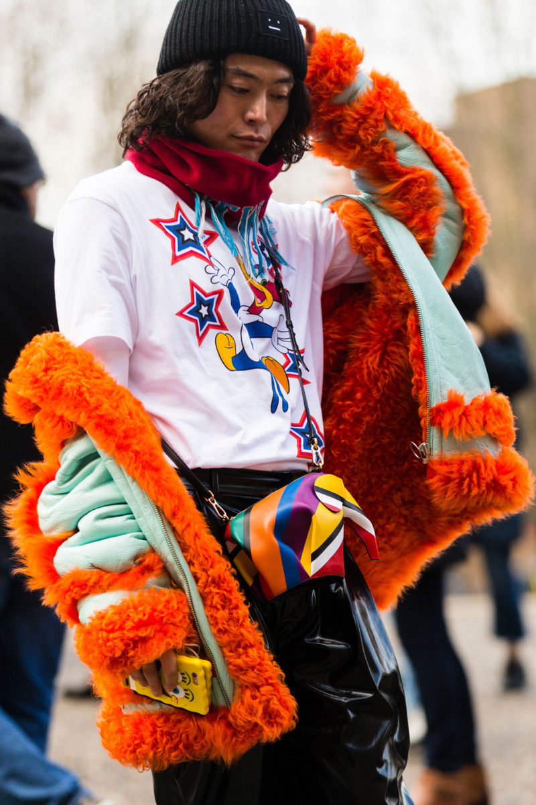
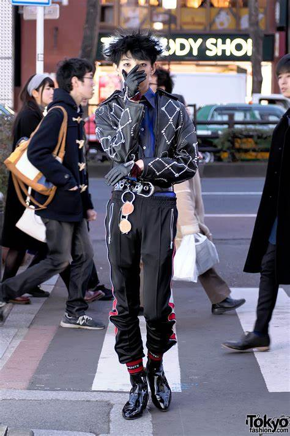
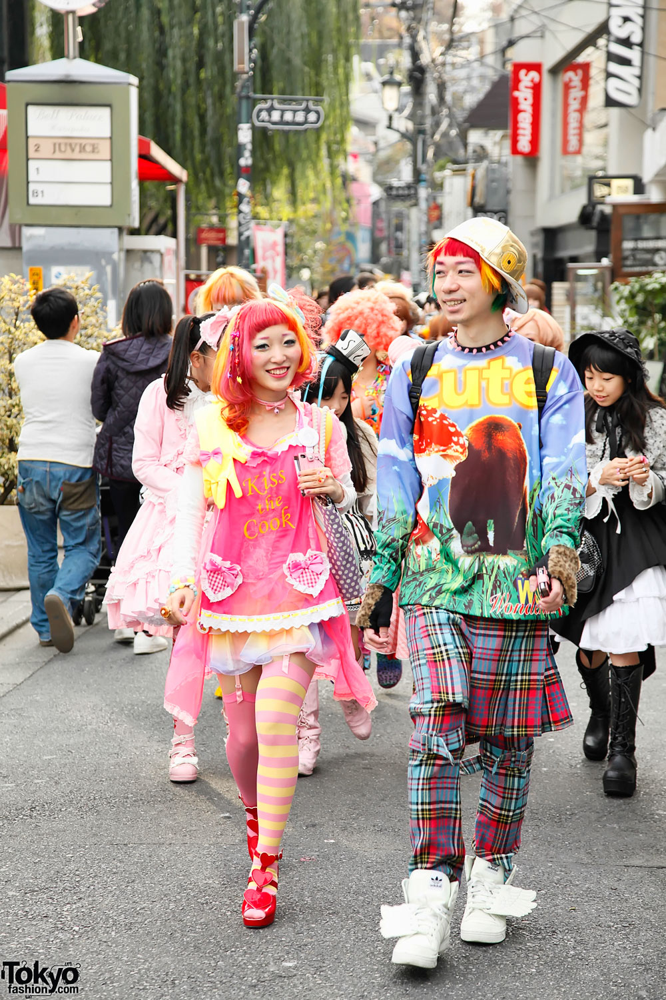
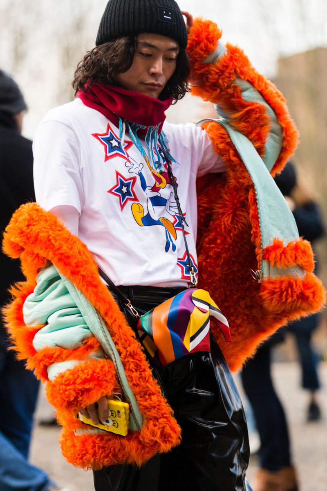
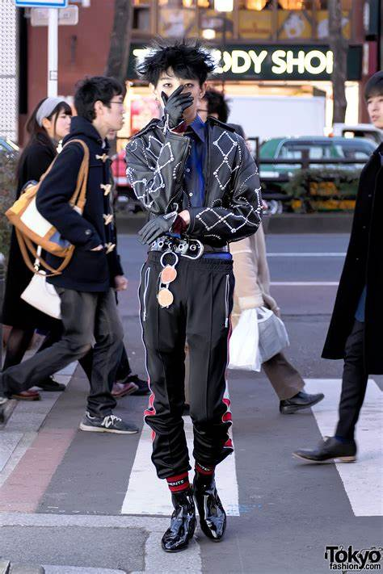
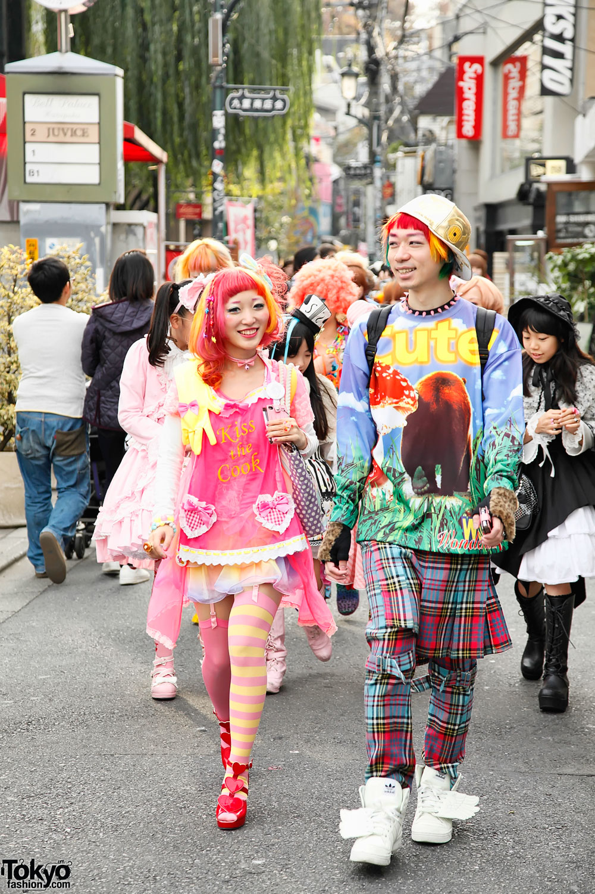

Tokijo mados savaitė atšaukta! Tačiau nenusiminkite, jums siūlome 5 japoniško gatvės stiliaus instagram puslapius, kuriais galėsite žavėtis

Dėl koronaviruso pandemijos buvo atšaukta daugybė renginių, tarp jų ir Tokijuje turėjusi vykti mados savitė.
Susiklosčius tokioms aplinkybėms, mes jums siūlome peržvelgti šiuos japoniško gatvės stiliaus instagram puslapius, kuriuose rasite įvairiausių įvaizdžių.
Yu Masui 
Tokyo fashion 
Y_la_vie_douce
Harajuku fashion walk 
Asachill
Susiklosčius tokioms aplinkybėms, mes jums siūlome peržvelgti šiuos japoniško gatvės stiliaus instagram puslapius, kuriuose rasite įvairiausių įvaizdžių.
Yu Masui 
Tokyo fashion 
Y_la_vie_douce
Harajuku fashion walk 
Asachill